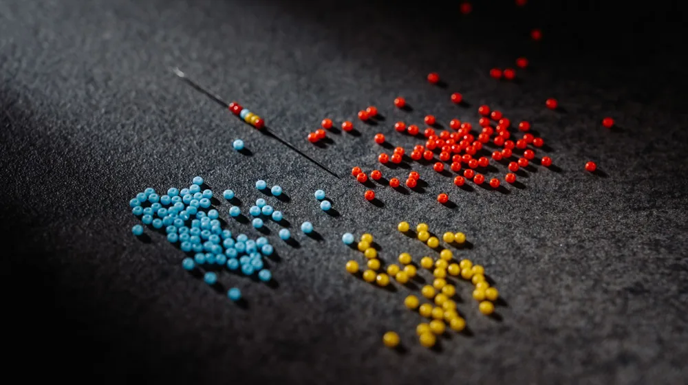
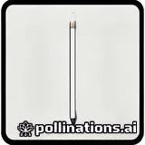

나전칠기 소품, 후회 없이 고르는 법 | 초보자도 안심 체크리스트
사진: KITSUN YUEN / Pexels (무료 이미지, 출처 표기)
나전칠기 소품, 어떤 매력이 있을까요?

나전칠기(螺鈿漆器)는 조개껍데기(자개)를 얇게 잘라 여러 가지 형태로 문양을 만들고, 이를 옻칠(Ottchil)한 기물 표면에 붙여 장식하는 한국의 전통 공예입니다. 천연 자개가 빛에 따라 오묘한 색을 내고, 옻칠의 깊은 광택이 더해져 시간이 지날수록 품격이 더해지는 것이 특징입니다. 보석함, 손거울, 명함집, 컵받침 등 일상생활에서 사용할 수 있는 다양한 소품들이 많은 사랑을 받고 있습니다.
단순한 생활용품을 넘어 한국의 아름다운 예술혼을 담은 작품으로 평가받으며, 해외에서도 그 가치를 인정받고 있습니다. 하나의 나전칠기 소품은 장인의 섬세한 손길과 오랜 시간의 정성이 담겨 있어, 그 자체로 특별한 의미를 가집니다.
후회 없는 선택을 위한 나전칠기 구매 전 체크리스트
나전칠기 소품을 구매할 때는 몇 가지 중요한 요소를 확인해야 합니다. 특히 자개의 종류와 옻칠 여부가 제품의 가치와 수명을 결정하는 핵심입니다. 아래 체크리스트를 통해 후회 없는 선택을 하시길 바랍니다.
1. 자개의 종류와 품질 확인하기
- 전복 자개 (Abalone mother-of-pearl): 은은하면서도 깊이 있는 무지개 빛깔이 가장 아름답다고 평가받으며, 고가 제품에 주로 사용됩니다.
- 야광패 자개 (Green turban snail mother-of-pearl): 전복 자개보다는 빛깔이 밝고 화려하며, 비교적 흔하게 볼 수 있습니다.
- 진주패 자개 (Pearl oyster mother-of-pearl): 백색에 가까운 은은한 광택이 특징이며, 섬세한 표현에 적합합니다.
자개 문양이 섬세하고 이음매가 매끄러운지, 조각 간의 간격이 일정하고 들뜸 없이 잘 부착되어 있는지를 꼼꼼히 살펴보는 것이 중요합니다.
2. 옻칠 여부와 마감 상태
전통적인 나전칠기는 여러 번의 옻칠 과정을 거쳐 완성됩니다. 옻칠은 자개의 아름다움을 보호하고, 제품의 내구성을 높여줍니다. 최근에는 생산 효율을 위해 옻칠 대신 카슈칠(Cashew lacquer)이나 화학 도료를 사용하는 경우도 많습니다.
제품 표면이 매끄럽고 균일한지, 칠이 벗겨지거나 기포가 없는지, 모서리 부분까지 깔끔하게 마감되었는지를 확인하세요. 옻칠 여부는 판매자에게 직접 문의하거나, 옻칠 인증 마크를 확인하는 것도 좋은 방법입니다.
나전칠기 소품, 이렇게 관리해야 오래 간다
아름다운 나전칠기 소품을 오랫동안 보존하려면 올바른 관리법이 필수적입니다. 몇 가지 주의사항만 지켜도 제품의 수명을 크게 늘릴 수 있습니다.
- 직사광선 피하기: 자개가 변색되거나 옻칠이 갈라질 수 있으므로, 직사광선이 들지 않는 서늘한 곳에 보관하는 것이 좋습니다.
- 온도와 습도 조절: 급격한 온도 변화나 지나치게 건조하거나 습한 환경은 칠의 손상이나 자개 이탈의 원인이 될 수 있습니다. 에어컨이나 난방기 옆은 피해주세요.
- 청소 방법: 부드러운 천(안경닦이 등)으로 먼지를 닦아내듯 가볍게 닦아주세요. 화학 세제나 연마제가 포함된 제품은 절대 사용하지 않아야 합니다. 이물질이 묻었을 경우, 물을 살짝 적신 부드러운 천으로 조심스럽게 닦아내고 즉시 마른 천으로 물기를 제거합니다.
- 충격 주의: 자개가 떨어지거나 칠이 깨질 수 있으므로 떨어뜨리거나 강한 충격을 주지 않도록 유의해야 합니다.
구매 전, 이런 점들은 꼭 확인하세요
나전칠기 소품을 구매하기 전에 다음과 같은 점들을 미리 확인하면 좋습니다. 특히 장인의 수공예품인 만큼, 예상치 못한 상황이 발생할 수 있습니다.
1. A/S 및 수리 여부: 나전칠기는 수리가 어려운 경우가 많습니다. 구매 전 판매처에서 A/S가 가능한지, 손상 시 수리 방법은 어떻게 되는지 확인해두는 것이 좋습니다. 일부 공방에서는 자체 수리를 진행하기도 합니다. 2026년 11월 기준으로, 모든 판매처가 수리 서비스를 제공하는 것은 아니니 반드시 사전에 문의해야 합니다.
2. 옻칠 알레르기: 천연 옻칠 제품은 옻나무 수액을 사용하므로, 옻 알레르기가 있는 사람은 주의해야 합니다. 칠이 완전히 건조되면 알레르기 반응이 현저히 줄어들지만, 민감한 체질이라면 카슈칠 제품을 고려하거나 구매 전 충분히 숙고할 필요가 있습니다. 국립무형유산원 등 관련 기관에서는 옻칠의 특성에 대한 정보를 제공하고 있으니 참고할 수 있습니다.
3. 가격대의 이해: 나전칠기 소품은 사용된 자개의 품질, 옻칠의 횟수, 장인의 숙련도, 제작 기간 등에 따라 가격대가 천차만별입니다. 저렴한 제품은 대량 생산된 모조품이거나 옻칠 대신 저렴한 도료를 사용했을 가능성이 높습니다. 합리적인 가격의 기준을 이해하고, 터무니없이 저렴한 제품은 한 번 더 의심해 보는 것이 좋습니다.
자주 묻는 질문
나전칠기 소품 구매와 관련하여 독자들이 자주 묻는 질문들을 모아 답변해 드립니다.
Q1: 나전칠기 소품은 어디서 구매하는 것이 좋나요?
A1: 신뢰할 수 있는 공방, 백화점 내 전통 공예품 매장, 또는 공신력 있는 온라인 쇼핑몰에서 구매하는 것을 추천합니다. 특히 장인의 이름이나 공방의 역사가 명시된 곳은 비교적 믿을 수 있습니다. 직접 방문하여 제품의 품질을 눈으로 확인하고, 궁금한 점을 충분히 문의하는 것이 가장 좋습니다.
Q2: 선물용으로 좋은 나전칠기 소품은 무엇인가요?
A2: 선물 받는 분의 취향과 용도를 고려하는 것이 중요합니다. 보석함은 귀금속을 보관하기에 좋고, 손거울이나 명함집은 휴대성이 좋아 실용적입니다. 컵받침이나 작은 장식품은 부담 없이 선물하기 좋습니다. 외국인 친구에게는 한국적인 미를 잘 보여줄 수 있는 좋은 선물이 됩니다.
Q3: 나전칠기 소품의 가격은 어느 정도인가요?
A3: 2026년 11월 기준, 작은 컵받침이나 열쇠고리는 몇만 원대에서 시작하지만, 섬세한 문양과 고급 자개, 옻칠이 사용된 보석함이나 필통 등은 수십만 원을 호가할 수 있습니다. 장인의 작품일수록 가격이 높아지며, 그만큼 소장 가치도 높습니다. 예산과 목적에 맞춰 다양한 제품을 비교해 보세요. 정확한 가격은 각 판매처에 문의하시길 권장합니다.
나전칠기 소품은 단순한 물건이 아니라, 한국의 아름다운 전통과 장인의 혼이 담긴 예술품입니다. 올바른 정보를 바탕으로 현명하게 선택하고 잘 관리하여, 그 아름다움을 오랫동안 생활 속에서 누리시길 바랍니다.
🔗 이 글도 함께 보면 좋아요: 한지 공예 체험 예약, 이것 놓치면 후회! 초보자도 쉽게 따라하는 법
관련 추천 상품
나전칠기 보석함, 나전칠기 거울, 자개 컵받침, 나전칠기 명함집 관련 인기 상품 보러가기
이 포스팅은 쿠팡 파트너스 활동의 일환으로, 이에 따른 일정액의 수수료를 제공받습니다.
한눈에 보는 상품 목록

나전 보석함
귀금속 보관에 용이하며, 화려한 자개 장식이 돋보이는 나전칠기 대표 소품입니다.
나전 손거울
휴대하기 편리하며, 섬세한 자개 문양이 미적인 가치를 더하는 실용적인 선물입니다.
자개 컵받침
차를 마실 때 품격을 더해주며, 생활 공간에 한국적인 아름다움을 불어넣는 아이템입니다.
나전 명함집
명함이나 카드 수납용으로 사용되며, 세련된 디자인으로 비즈니스 선물로도 좋습니다.
나전 연필꽂이
책상 위를 정리정돈하고 전통미를 더해주는 사무용품입니다.